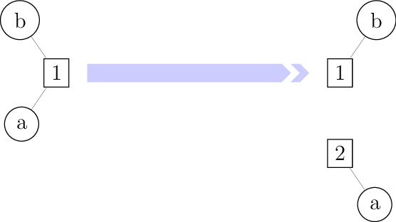

3.4. Mutabilité¶
Il s’agit d’un paragraphe un peu subtil : il s’agit d’expliquer la différence fondamentale qu’il existe en Python entre les objets que l’on peut modifier (listes) ou que l’on ne peut modifier (tuples ou chaînes de caractère).
Considérons ce premier exemple où les variables sont des entiers.
In [1]: a = 1 In [2]: b = a In [3]: a = 2 # on modifie a In [4]: a Out[4]: 2 In [5]: b # b n'a pas ete modifiée Out[5]: 1
Considérons maintenant l’exemple suivant où les variables sont des listes.
In [6]: a = [1, 2, 3] In [7]: b = a In [8]: a[0] = 'foo' # on modifie la liste a In [9]: a Out[9]: ['foo', 2, 3] In [10]: b # la liste b a aussi ete modifiée ! Out[10]: ['foo', 2, 3]
Pour expliquer la différence entre ces deux exemples, il faut comprendre la représentation des objets Python en mémoire. Pour cela, on va utiliser la fonction id. Pour schématiser, celle-ci renvoie l’emplacement en mémoire d’un objet.
In [11]: a = 1
In [12]: b = a
In [13]: id(a), id(b) # les variables a et b pointent vers le même emplacement en mémoire
Out[13]: (140716654813840, 140716654813840)
In [14]: a = 2
In [15]: id(a), id(b) # la variable b pointe toujours vers le même emplacement mais plus la variable b
Out[15]: (140716654813872, 140716654813840)
L’instruction a = 2 a fait pointer la variable a vers un autre emplacement en mémoire où est stocké l’entier 2.

In [16]: a = [1, 2, 3]
In [17]: b = a
In [18]: id(a), id(b) # les variables a et b pointent vers le même emplacement en mémoire
Out[18]: (1835800432136, 1835800432136)
In [19]: a[0] = 'foo'
In [20]: id(a), id(b) # les variables a et b pointent toujours vers le même emplacement
Out[20]: (1835800432136, 1835800432136)
Ici, l’instruction a[0] = 'foo' a modifié l’objet stocké à l’emplacement commun vers lequel pointent les variables a et b. Comme a et b pointent toujours le même emplacement en mémoire, la variable b est maintenant associée à ce nouvel objet.
![\node[rectangle,draw,pin={[draw,circle]120:b},pin={[draw,circle]240:a}](before){[1, 2, 3]};
\node[rectangle,draw,pin={[draw,circle]60:b},pin={[draw,circle]-60:a}](after)[right=5cm of before]{['foo', 2, 3]};
\draw[-fast cap,shorten <=10pt,shorten >=10pt,>=latex, blue!20!white, line width=10pt](before) -- (after);](_images/tikz-72806e22283cd01e6bb9fad0bf77c3e547a88556.png)
Mais pourquoi cette différence de comportement ? Il existe en Python deux types d’objets : les objets mutables et les objets immutables. On peut donner la définition suivante.
Un objet est dit mutable si on peut changer sa valeur après sa création. Il est dit immutable dans le cas contraire 1.
- Objets immutables
Entiers, flottants, complexes, tuples, chaînes de caractères, …
- Objets mutables
Listes, dictionnaires, …
Voilà la solution du mystère : toutes les variables pointant vers un même objet mutable sont affectées par la modification de cet objet. Ceci ne peut pas se produire lorsque des variables pointent vers un objet immutable puisque celui-ci ne peut-être modifié.
Note
Bien souvent, on veut copier une liste dans un nouvel objet pour qu’il ne subisse pas les modifications de l’objet initial. Pour cela, il ya plusieurs possibilités :
le slicing
[:];l’utilisation de la méthode
copy;l’utilisation du constructeur
list.
In [21]: liste1 = [1, 2, 3]
In [22]: liste2 = liste1[:]
In [23]: liste3 = liste1.copy()
In [24]: liste4 = list(liste1)
In [25]: id(liste1), id(liste2), id(liste3), id(liste4) # les objets sont bien distincts
Out[25]: (1835801807624, 1835800088008, 1835799545480, 1835793375560)
In [26]: liste1[0] = 'toto'
In [27]: liste1, liste2, liste3, liste4 # liste1 a ete modifiée mais pas les autres listes
Out[27]: (['toto', 2, 3], [1, 2, 3], [1, 2, 3], [1, 2, 3])
À faire
constructeur dans glossaire
Les opérateurs + et +=
Le lecteur attentif aura remarqué qu’on semblerait pouvoir modifier un objet immutable telle qu’une chaîne de caractères ou une liste à l’aide des opérateurs + ou +=. Mais ces opérateurs ne modifient pas l’objet en question ; ils créent en fait un nouvel objet. On peut s’en convaincre à l’aide de la fonction id.
In [28]: t = (1, 2, 3) In [29]: id(t) Out[29]: 1835793301936 In [30]: t = t + (4, 5) In [31]: t Out[31]: (1, 2, 3, 4, 5) In [32]: id(t) Out[32]: 1835794899808
In [33]: t = (1, 2, 3) In [34]: id(t) Out[34]: 1835793105256 In [35]: t += (4, 5) In [36]: t Out[36]: (1, 2, 3, 4, 5) In [37]: id(t) Out[37]: 1835740050800
Pour les objets mutables tels que les listes, les opérateurs + et += se comportent de manières différentes : l’opérateur + crée un nouvel objet tandis que l’opérateur += modifie l’objet initial.
In [38]: liste1 = [1, 2, 3] In [39]: liste2 = liste1 In [40]: liste1 = liste1 + [4, 5] In [41]: liste1, liste2 # seule liste1 a ete modifiée Out[41]: ([1, 2, 3, 4, 5], [1, 2, 3]) In [42]: id(liste1), id(liste2) # c'est normal : liste1 et liste2 pointent vers des objets distincts Out[42]: (1835800996040, 1835802065608)
In [43]: liste1 = [1, 2, 3] In [44]: liste2 = liste1 In [45]: liste1 += [4, 5] In [46]: liste1, liste2 # liste1 et liste2 ont ete modifiées Out[46]: ([1, 2, 3, 4, 5], [1, 2, 3, 4, 5]) In [47]: id(liste1), id(liste2) # c'est normal : liste1 et liste2 pointent vers le même objet Out[47]: (1835802016904, 1835802016904)
Egalité structurelle ou physique
On a vu que l’opérateur == permettait de tester si deux objets étaient égaux. Mais de quel type d’égalité parle-t-on alors ? L’opérateur == teste si deux objets ont la même valeur sans pour autant qu’il partage le même emplacement en mémoire. On parle alors d'égalité structurelle.
Lorsque « deux » objets sont en fait identiques (c’est-à-dire lorsqu’ils ont le même emplacement en mémoire), on parle d'égalité physique. Pour tester l’égalité physique, on peut comparer les emplacements en mémoire à l’aide de la fonction id ou plus simplement utiliser l’opérateur is.
In [48]: liste1 = [1, 2, 3] In [49]: liste2 = liste1 In [50]: liste3 = liste1[:] In [51]: liste1, liste2, liste3 Out[51]: ([1, 2, 3], [1, 2, 3], [1, 2, 3]) In [52]: id(liste1), id(liste2), id(liste3) Out[52]: (1835802108296, 1835802108296, 1835802108936) In [53]: liste2 == liste1, liste3 == liste1 Out[53]: (True, True) In [54]: liste2 is liste1, liste3 is liste1 Out[54]: (True, False)
Un exemple peut-être un peu plus surprenant.
In [55]: [1, 2, 3] == [1, 2, 3] Out[55]: True In [56]: [1, 2, 3] is [1, 2, 3] Out[56]: False
Python a en fait stocké deux versions de la liste [1, 2, 3] dans deux emplacements en mémoire distincts.
On termine par un cas plus vicieux que les deux exemples initiaux et qui peut faire passer des nuits blanches au programmeur débutant en Python.
In [57]: a = [[0] * 3] * 4
In [58]: a
Out[58]: [[0, 0, 0], [0, 0, 0], [0, 0, 0], [0, 0, 0]]
In [59]: a[0][0] = 1 # on pense n'avoir modifié qu'un élément de la liste de listes a
In [60]: a # en fait non...
Out[60]: [[1, 0, 0], [1, 0, 0], [1, 0, 0], [1, 0, 0]]
Notes
- 1
Ce n’est pas rigoureusement exact. Un objet immutable tel qu’un tuple peut contenir des objets mutables comme des listes. Néanmoins, chaque objet du tuple conserve le même emplacement en mémoire même s’il a été modifié.
In [61]: a = ([1, 2, 3], 'toto', 'tata') In [62]: b = a In [63]: a[0][1] = 1000 In [64]: a Out[64]: ([1, 1000, 3], 'toto', 'tata') In [65]: b # b a egalement ete modifié Out[65]: ([1, 1000, 3], 'toto', 'tata') In [66]: id(a[0]), id(b[0]) # le premier élément du tuple est toujours le même Out[66]: (1835802183112, 1835802183112)